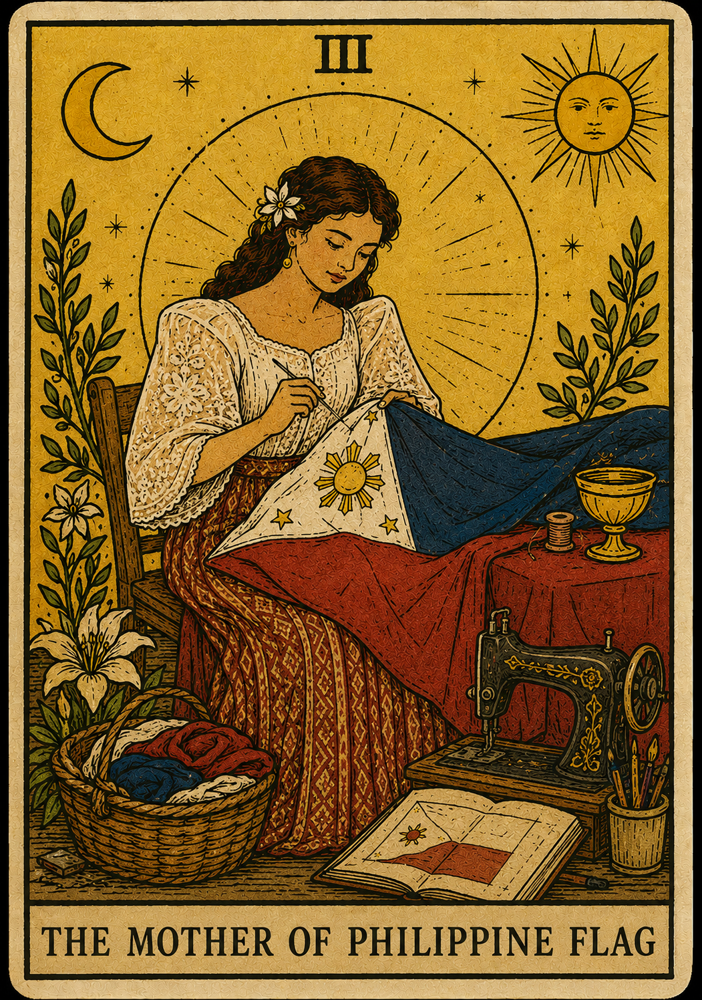

A digital tarot manuscript honoring Marcela Agoncillo — seamstress of revolution, keeper of identity, and mother of the Philippine Flag.

Represents sacrifice, precision, and the quiet labor behind revolution.
Embodies freedom, resistance, and Filipino identity.
Illuminates hope and the awakening of a nation.
Reflects memory, history, and preservation of heritage.
Marcela Agoncillo is celebrated as the principal seamstress of the first official Philippine flag. In 1898, while in exile in Hong Kong, she and her companions hand-sewed the flag that would later become the enduring emblem of Philippine independence. Her craftsmanship transformed cloth into a symbol of revolution and unity.
Arrival of Ferdinand Magellan in the Philippines.
The Philippine Revolution against Spanish colonial rule begins.
Marcela Agoncillo sews the first Philippine flag in Hong Kong.
Declaration of Philippine Independence in Kawit, Cavite.
The Philippines gains full independence from the United States.
Marcela Agoncillo’s most celebrated contribution was sewing the first official Philippine flag in Hong Kong in 1898. Historical records also credit her daughter Lorenza Agoncillo and Delfina Herbosa Natividad, a niece of José Rizal, as collaborators in the sewing of the flag. Her work helped turn the ideals of the revolution into a visible national emblem that was first unfurled during the proclamation of Philippine Independence.
https://kuwaitpe.dfa.gov.ph/the-philippines/phl-flag-protocol